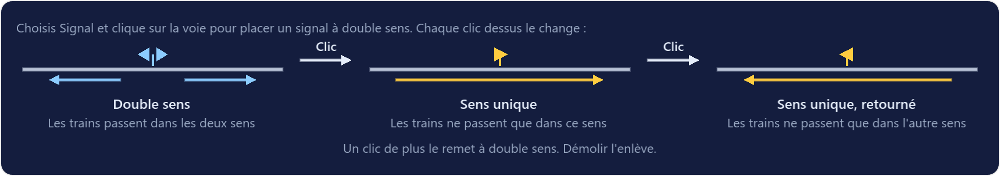

Signaux
Garder les trains à distance.
Les signaux découpent une ligne en sections pour que les trains s'attendent et ne se percutent pas. Pour commencer, tu n'en as besoin d'aucun : les embranchements et les voies d'évitement séparent déjà les trains. Les signaux permettent à plus de trains de partager une ligne chargée.
Placer des signaux
- Choisis Signal (9) dans Rail et clique sur un tronçon de voie. Chacun coûte 600 $.
- Les signaux se placent sur une voie droite ou diagonale, pas dans les courbes, aux embranchements, sur les quais ni aux passages à niveau.
- Reclique sur un signal pour le rendre à sens unique, encore une fois pour l'autre sens, et une dernière fois pour le double sens.
- Retire un signal avec Démolir.


Dans quel sens pointe-t-il ?
- Quand Signal est choisi, une flèche s'affiche sur chaque signal : une pointe à chaque bout pour un signal à double sens, une seule pointe pour un signal à sens unique, dans le sens où les trains peuvent passer.
- Le signal sous la souris montre en blanc ce qu'un clic en ferait, et la note à côté de la souris le dit en toutes lettres.
- Sans l'outil, regarde les lampes : un signal à double sens a une lampe sur chaque face de son mât ; un signal à sens unique n'en a qu'une, tournée vers les trains qu'il laisse passer.
Sections
- La voie entre deux signaux est une section. Un train ne franchit un signal que si la section suivante est libre ; sinon, il attend.
- Chaque embranchement est une section à lui seul, avec ou sans signaux. Un train ne s'engage sur un embranchement que s'il est libre, et la voie par laquelle il en sort aussi, jusqu'au prochain embranchement ou signal.
- Les trains n'attendent qu'aux signaux et devant les embranchements. Ailleurs, les trains sur la même voie se percutent : les deux sont détruits, avec tout ce qu'ils transportent, et l'épave bloque la ligne pendant quelques semaines.
- Un signal à sens unique ne laisse passer les trains que dans son sens, et les trains en tiennent compte pour planifier leur itinéraire.
Accidents ferroviaires
- Quand deux trains se percutent, les deux sont détruits avec tout ce qu'ils transportent, et rien n'est remboursé. Les actualités en parlent, et de la fumée s'élève de l'endroit pendant quelques jours.
- Un train dans un dépôt ne peut pas être percuté, ni un train qui passe sous un pont qu'un autre train traverse. Les bus et les camions n'ont jamais d'accident.
- Pendant l'entretien, les wagons restés hors du dépôt occupent toujours la voie.
- Un accident près d'une ville fait baisser l'avis du conseil sur chaque compagnie impliquée. Voir Conseils municipaux.
- Pour faire rouler plus d'un train sur une seule voie, ajoute des voies d'évitement là où les trains se croisent.
Ensuite : Voies d'évitement.